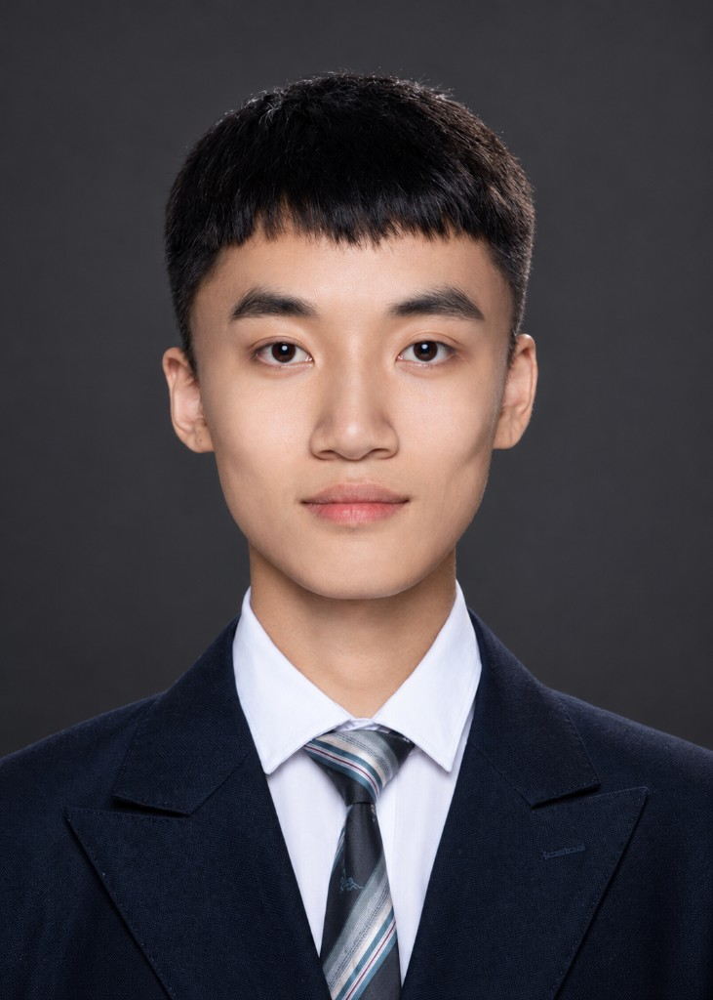
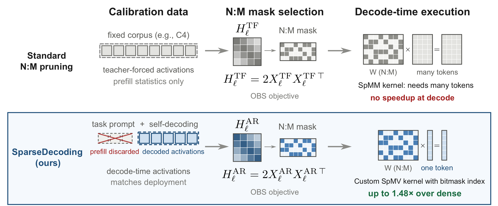

|
Qitong Wang | 王启同 I'm a final-year undergraduate student in a dual-degree program between Tianjin University of Technology (TJUT) and Université du Québec à Chicoutimi (UQAC) with ranking 1/174 in GPA. Currently, I'm a visiting student at Efficient Neural Computing and Design Lab (ENCODE), Westlake University. Email / Github / X / Google Scholar / LinkedIn |
 |

Research InterestsMy research focuses on Efficient AI (e.g. Model compression) and Machine Learning Systems (e.g. LLM Inference). |
Publications |
|
 |
Qitong Wang*,
Xinwei Niu*,
Mingluo Su,
Shanwei Zhao,
Shiai Zhu,
Huan Wang#
(*: Equal contribution, #: Corresponding author)
ArXiv, 2026 |
ArXiv |
Webpage
|
Experience |

|
Efficient Neural Computing and Design Lab (ENCODE), Westlake University
2025.03 - Present Visiting Student Research Advisor: Prof. Huan Wang |

|
Peking University (PKU)
2024 Summer School Large Language Model |
|
School of Computer Science and Engineering, Tianjin University of Technology (TJUT)
2023 - Present Undergraduate Student GPA Ranking: 1/174 |
|
|
Department of Computer Science and Mathematics, Université du Québec à Chicoutimi (UQAC)
2023 - Present Undergraduate Student |
Selected Awards and Honors2024: Tianjin University of Technology First-class Scholarship 2024: China International College Students' Innovation Competition Bronze Prize |
MiscI'm a big fan of classical music 🎻 , especially Bach and Sergei Rachmaninoff. One of my favorite things to do is go to live classical music concerts. For me, a live performance is more than entertainment: it calms me down from the rush of daily life and makes me think about many things. One of my favorite ensembles is the China NCPA Orchestra (China National Center for the Performing Arts Orchestra), which I have had the pleasure of hearing live many times. Here are some photos:
|


|
This website is based on Jon Barron's website. |